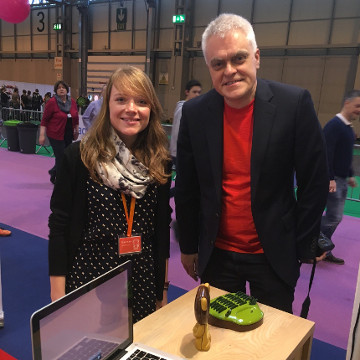
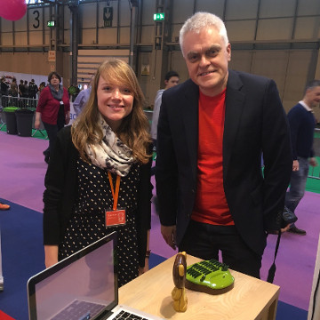

About
Want to write a story about Milo? Feel free to get in touch at info@milotoy.co.uk for any questions or a quick chat.
Please take a look or download our press kit. All the information and photo’s can be used with the appropriate credits.
Happy writing!
 
